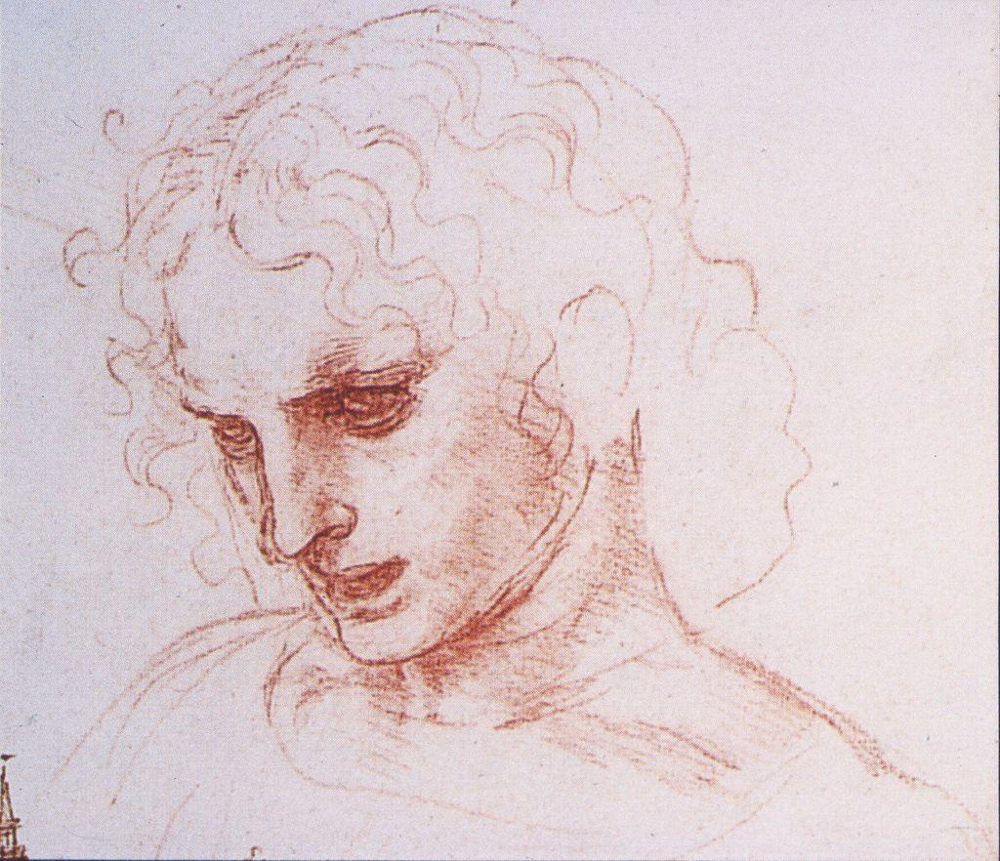

This is not the famous mural. It is Leonardo working out the mural before he painted it: a page of studies for The Last Supper, testing how each figure sits, leans, and gestures. Watch how much he solves with line alone, long before any color.

Every gesture in the finished mural was observed and rehearsed first. Leonardo watched how real people react when startled, then recorded those reactions here so the painting would feel true. The masterpiece was built on a foundation of looking.
Observation is not one style. It looks completely different in different hands. Compare a Renaissance scientist-artist with a modern American painter who turned looking into a system.
Leonardo treated the sketchbook as a laboratory. He dissected bodies, tracked the flow of water, and studied light on curved surfaces, drawing each subject from many angles to understand it fully. For him, to draw a thing was to ask how it worked. His accuracy came from relentless, curious attention.
Close built enormous, hyper-detailed portraits by dividing a photograph into a grid and observing just one small square at a time, transferring exactly what he saw before moving to the next. He said he did not make decisions, he made observations. By trusting each tiny cell of what was actually there, an accurate whole emerged. It is observation turned into method, and it is the same idea behind the sighting technique you will practice in Lesson 4.
Close's work is under copyright, so we view it at the source rather than reproduce it here. Open a self-portrait and look for the grid: up close it dissolves into hundreds of small marked squares, and only at a distance does the face resolve.
Chuck Close, Self-Portrait, 1997, at the Museum of Modern ArtMore Chuck Close works in the MoMA collection
Artists and critics read a work in a deliberate order so that judgment is earned, not blurted. The four steps spell DAIJ: Describe, Analyze, Interpret, Judge. The rule is simple: you may not skip ahead. Describe before you analyze; analyze before you interpret; interpret before you judge. Here is DAIJ applied to Leonardo's Last Supper figure study above.
D · Describe (just the facts)
Several seated and half-standing figures sketched in brown ink. Hands are drawn larger and darker than the rest. Some heads lean toward a center; a few lines are gone over twice.
A · Analyze (how is it built?)
Leonardo leans on line and gesture. The repeated, darker lines on the hands show he is problem-solving the poses there, because hands carry the emotion. The leaning heads create movement that pulls the eye toward the center of the future composition.
I · Interpret (what is it saying?)
This is a mind thinking on paper. The study is about reaction: how bodies register a shock. Leonardo is testing how to make a still image feel like a single charged moment.
J · Judge (does it succeed?)
As a study, it succeeds completely. The gestures worked out here became the emotional engine of one of the most famous paintings ever made. The looking paid off.
▶ In your notebook, write one Judge sentence about Leonardo's study before you open this. Then compare.
Leonardo dissected; Close built a grid. Different centuries, different methods, one habit: they trusted careful looking over confident guessing. DAIJ is how you slow your own eye down to their speed.